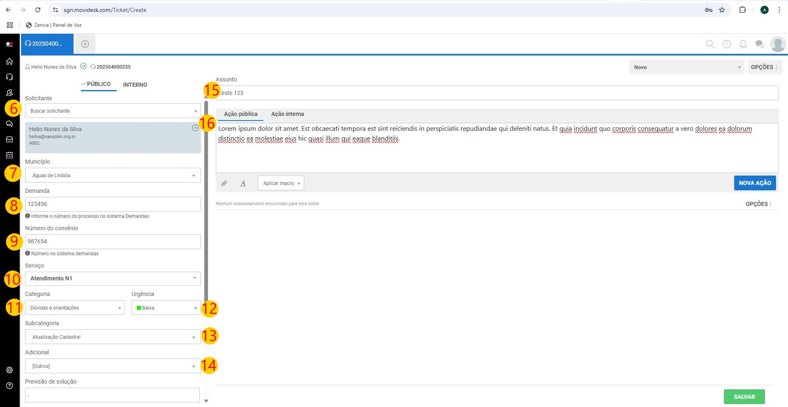

Tutorial 1: Como cadastrar uma nota no Movidesk
2. Preencha seus dados
3. Clique na "casinha" (Home) para certificar que está no início.
4. Clique na cruz cinza
5. Vai abrir o menu e nele clique em "Novo Ticket"
Modo de preencher:
6. Solicitante: Aqui colocaremos o solicitante, até o momento de escrita deste tutorial, apenas o Hélio está cadastrado.
7. Município: a cidade origem da demanda
8. Demanda: coloque aqui o número da demanda
9. Número do convênio:
10. Serviço: Escolha entre os 3 níveis de atendimento (N1, N2 ou N3)
11. Categoria: Escolha entre "Dúvidas e Orientações", "Solicitação de Serviço" ou "Suporte Técnico"
12. Urgência: É sobre a tem 4 níveis (alta, média, baixa e urgente)
13. Subcategoria
14. Adicional
15. Assunto: Título da nota
16. Ação Pública e Ação Interna: Caixa de texto onde você irá inserir um breve relato da ocorrência: Ação Pública o texto ficará disponível para o público ler, Ação Interna o texto ficará restrito apenas para toda nossa equipe.
